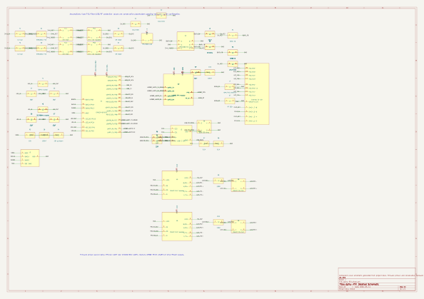

stage 01 / intake radar
需求捕获雷达
捕获 RTK 基站目标、接口约束、测试入口和交付物格式，形成后续自动化任务的输入矩阵。

workflow map
stage 01 / intake radar
real project inside
Demo 里的能力来自当前仓库：UM982 非阻塞初始化、RTCM 消息配置、DMA 透传、USB CDC 调试、Watchdog 保活和 Flash CRC 配置记录。
evidence loop
CMake、Ninja、Arm GCC、STM32CubeProgrammer 自动检查。
01_install_check.logDebug / Release preset 生成 ELF、HEX、BIN。
dpiny-RTK.elf/.hex/.binSWD 下载、校验、复位，有低速连接兜底路径。
03_flash.logShell 命令、配置保存、重启保持都能脚本化验证。
04_functional_test.log非法参数、边界值、未知命令不会污染配置。
05_input_validation.logRTCM3 帧、消息类型覆盖、CRC BAD 为 0。
06_rtcm_parse.logpromotion angle